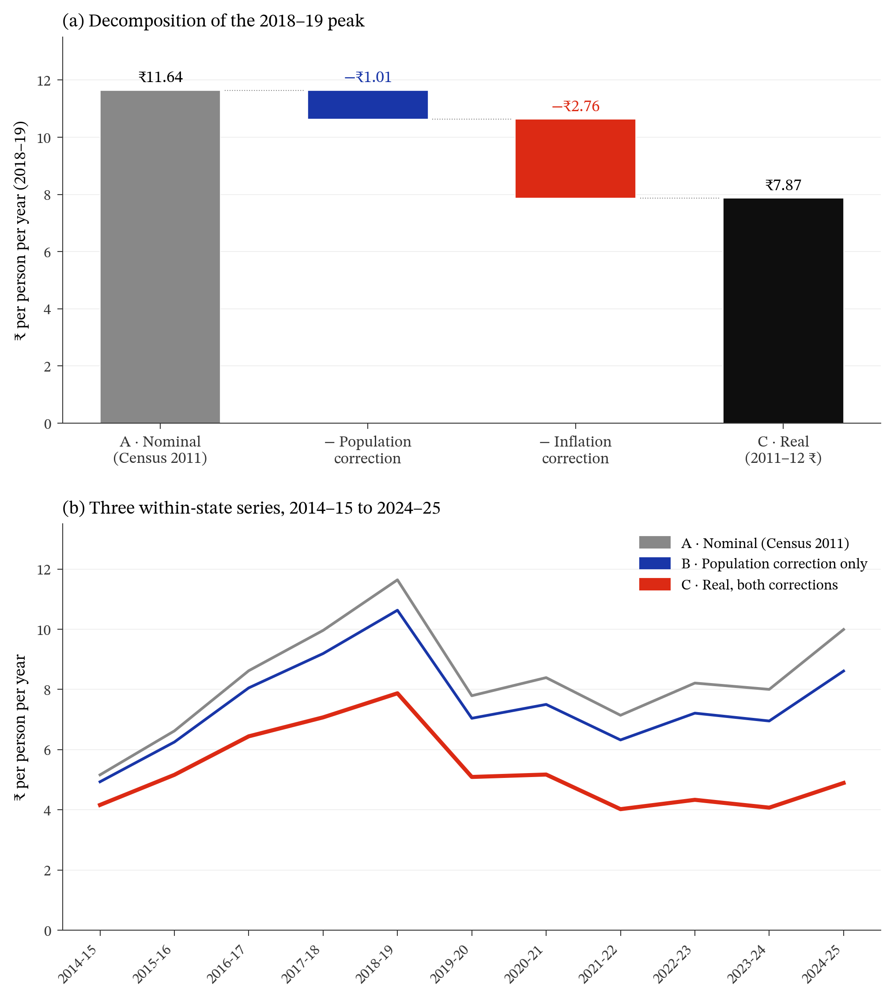
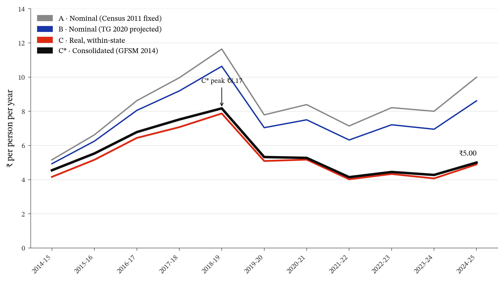
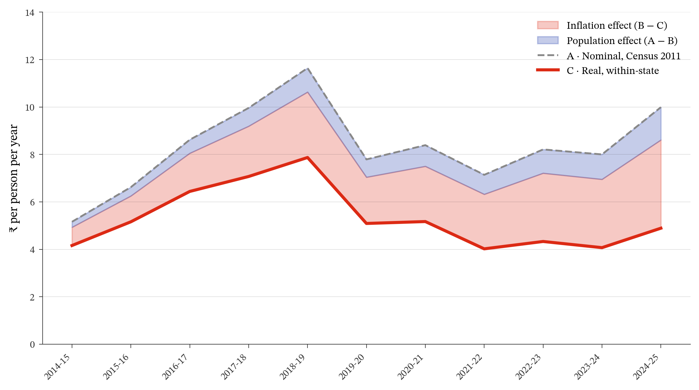
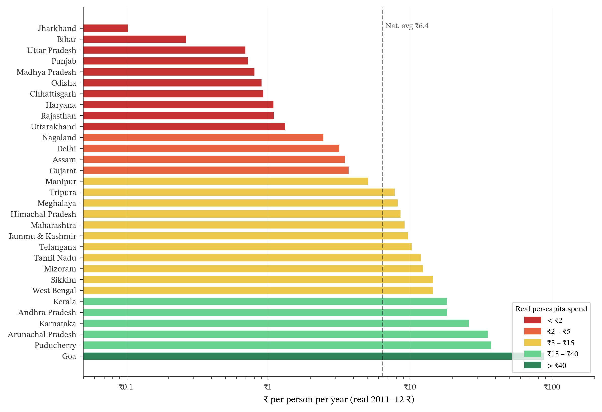
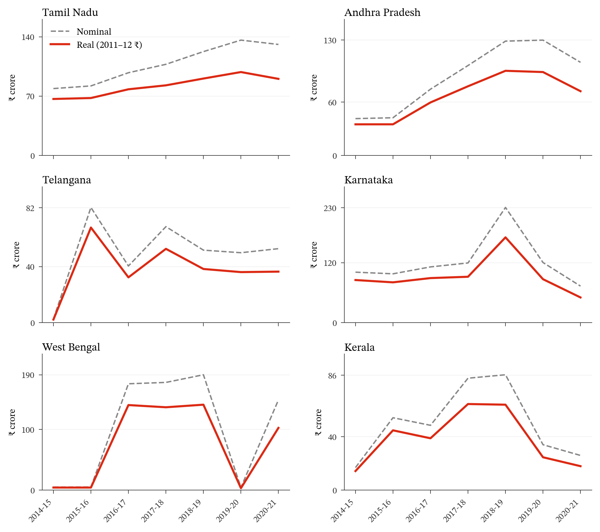
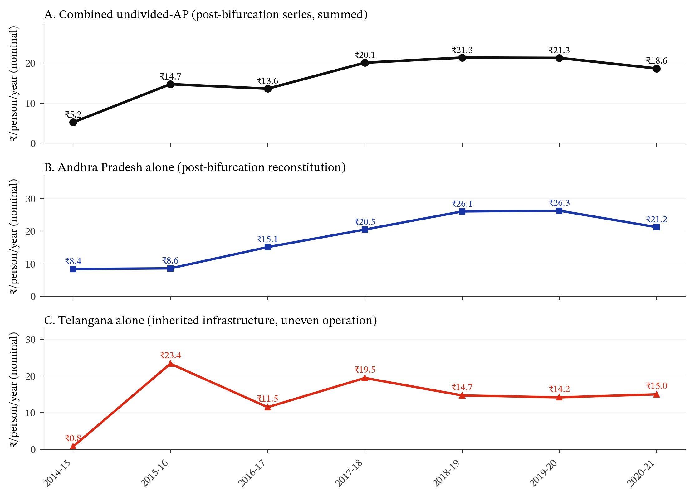
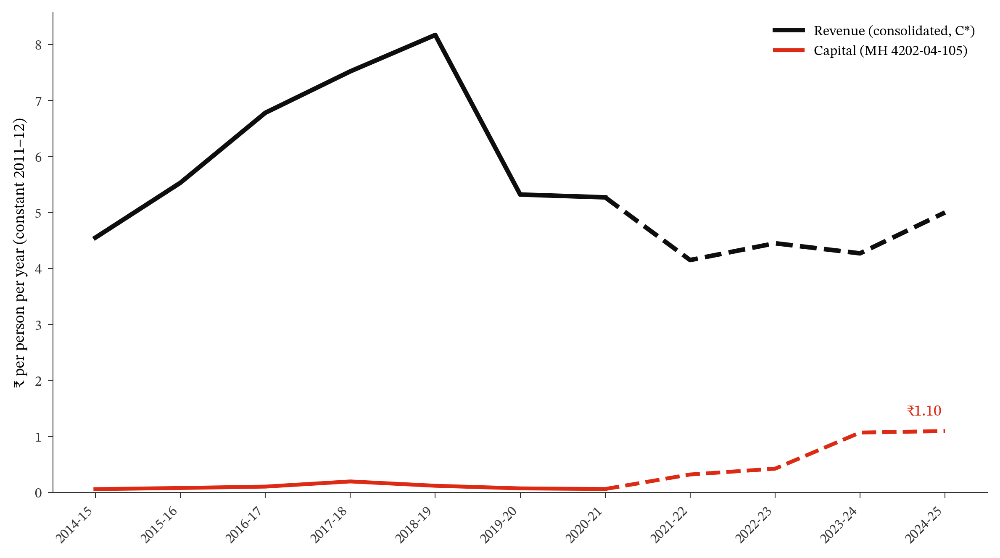

PUBLIC FINANCE · MEASUREMENT · LIBRARIES
The Critical CapEx India Won't Commit
Public Libraries in the Capital-Expenditure Decade, 2014–15 to 2024–25
Abstract
India spent ₹1,508 crore on public libraries in 2024–25. That is the Union and all thirty-one States and Union Territories together, revenue and capital, for a population of 1.4 billion. It works out to ₹10.73 per person for the year, or ₹6.10 in constant 2011–12 rupees. In no year of the past decade has that figure exceeded ₹8.29.
We build the first consolidated series of this spending, 2014–15 to 2024–25, entirely from audited accounts. For each State and Union Territory we read the revenue head (2205-00-105) and the capital head (4202-04-105) from the primary document, either the State's CAG Finance Accounts or its budget Detailed Estimates, and add Central transfers through the Raja Rammohun Roy Library Foundation. Spending is deflated to constant 2011–12 rupees and divided by the Government's own annual population projections rather than a fixed Census denominator. Together those corrections cut the headline figure for 2018–19 by nearly a third.
The series runs ₹8.17 per person in 2018–19, ₹4.15 in 2021–22, and ₹5.00 in 2024–25. What movement there is at the end is confined to a few States, Tamil Nadu above all, and takes the form of buildings rather than of libraries being staffed and stocked. The accounts do not describe a library system being built. They describe one being kept, barely, where it already exists.
The paper
1 Introduction
India funds public libraries through State budgets and one small Central channel. The State side is recorded in the CAG’s Combined Finance and Revenue Accounts (Comptroller and Auditor General of India 2025) under Major Head 2205, Sub-head 105; the Central side appears in the Ministry of Culture’s annual Demand for Grants. Nobody adds the two together. Neither the CAG, nor the Ministry, nor any planning document reports what the country spends on public libraries in a year.
Kulkarni et al. (2025b) did the foundational work. They built the State series, extracting MH 2205-105 across 31 States and Union Territories for FY 2014–15 to FY 2020–21, and it remains the most systematic published continuous series for this budget head; a companion paper by the same authors examines the gaps in State library legislation (Kulkarni et al. 2025a). This paper builds on that compilation, and extends it in four ways.
Three are corrections. Their per-capita figures divide by India’s Census 2011 population, held constant across every year; on the Government’s own projections India had added more than 190 million people by the series’ final year, so a fixed denominator flatters the figure a little more each year. We substitute the Government’s own annual projections, prepared by the MoHFW Technical Group on Population Projections (Ministry of Health and Family Welfare 2020). India holds no census between 2011 and the present, so an annual denominator has to come from projection; the Technical Group’s is the official series. Their series is in nominal rupees, which records what legislatures appropriated but not what those appropriations bought; India’s GDP deflator fell from 0.84 to 0.57 against a 2011–12 base over the decade, a 32% real-terms compression. We deflate with the MoSPI implicit GDP deflator (Ministry of Statistics and Programme Implementation 2025), the standard for real government expenditure in India. And their series covers States alone, so we add Central transfers through the Raja Rammohun Roy Library Foundation from primary-source disbursement actuals, producing the consolidated State-plus-Centre measure that the IMF GFSM 2014 General Government framework treats as the appropriate one (International Monetary Fund 2014).
The fourth is an extension. The Combined Finance and Revenue Accounts stop at FY 2020–21, when the CAG discontinued them, so the last four years can only be reached by reading each State’s own accounts one at a time. We do that: every year from FY 2014–15 to FY 2024–25 is a measured figure, the recent ones read State by State from CAG Finance Accounts Volume II and State budget Detailed Estimates. The labour is worth it because those years do not behave like the earlier ones. The series falls sharply to a trough in FY 2021–22 and then recovers in part, driven by a handful of States, and neither movement can be recovered by fitting a trend to the years before it.
The answer is ₹1,508 crore for FY 2024–25: the Union and all thirty-one States and Union Territories together, revenue and capital, for a population of 1.4 billion. That is ₹6.10 per person in constant 2011–12 rupees, or ₹5.00 with construction set aside.
Figure 1 previews the result of the two within-state corrections. The left panel decomposes the 2018–19 peak (the highest point in the original series) into the population and inflation corrections. The right panel traces all three within-state series across the decade. Section 2 adds the consolidated state-plus-Centre layer.
The size of the within-state correction is substantial. The as-published 2018–19 figure (₹11.64) is 48% higher than the within-state real-terms figure (₹7.87); approximately three-quarters of the ₹3.77 gap (₹2.76) is the inflation effect, the remaining quarter (₹1.01) the population effect. The inflation effect grows over time; the population effect compounds until a new census resets the denominator. Once Central transfers through RRRLF are added (§7.4), the consolidated figure for 2018–19 rises to ₹8.17. The series then runs ₹4.15 in FY 2021–22, and ₹4.45, ₹4.27 and ₹5.00 across FY 2022–23 to FY 2024–25. These movements are small in absolute terms (the whole decade sits between ₹4 and ₹8 per person per year) and an extrapolation from the earlier years would have missed them in both directions. What movement there is at the end is confined to a few States, Tamil Nadu chief among them (§2.3). One point on that series is provisional: FY 2024–25 holds RRRLF flat at ₹27.07 crore pending the 53rd Annual Report. We report the consolidated figure as the headline series throughout, with the within-state Series C retained for the bias decomposition.
What the accounts describe, across eleven years and thirty-one jurisdictions, is not a library system being built. It is one being kept, barely, where it already exists.
This paper measures. It does not explain why the spending fell, who was hurt by the fall, or what reversing it would cost. Those questions need different evidence (the institutional record, household microdata, and a costing exercise) and none of them can be settled from the accounts alone.
The series is published as data, with the code that produces it, so that others can check it and build on it.
2 Results
2.1 National trend: four series compared
The table below presents the full numerical results. Figure 2 plots the four series. Every point is an audited actual: the recent years that prior work could only project are here read State by State from the source accounts.
| Year | A: Nominal (Census 2011) | B: Nominal (TG pop) | C: Real, within-state | C*: Consolidated (GFSM) |
|---|---|---|---|---|
| 2014-15 | 5.16 | 4.93 | 4.16 | 4.55 |
| 2015-16 | 6.62 | 6.25 | 5.16 | 5.53 |
| 2016-17 | 8.62 | 8.05 | 6.44 | 6.78 |
| 2017-18 | 9.96 | 9.19 | 7.07 | 7.52 |
| 2018-19 | 11.64 | 10.63 | 7.87 | 8.17 |
| 2019-20 | 7.79 | 7.04 | 5.09 | 5.32 |
| 2020-21 | 8.39 | 7.5 | 5.17 | 5.27 |
| 2021-22 | 7.14 | 6.32 | 4.02 | 4.15 |
| 2022-23 | 8.21 | 7.21 | 4.33 | 4.45 |
| 2023-24 | 8 | 6.95 | 4.07 | 4.27 |
| 2024-25 | 9.99 | 8.61 | 4.89 | 5 |

Three findings stand out.
Population correction (A → B). Substituting TG 2020 projections for the Census 2011 fixed denominator reduces the FY 2018–19 peak from ₹11.64 to ₹10.63, a 9% revision. By FY 2024–25, the gap is ₹1.38 (A: ₹9.99 vs B: ₹8.61). This gap will continue widening until a new census resets the denominator.
Real-terms correction (B → C). This is the larger within-state revision. Deflating Series B’s FY 2018–19 peak to constant 2011–12 ₹ yields ₹7.87, a further 26% reduction. The correction reshapes the recent years as much as it lowers them: the nominal figures rise across FY 2021–22 to FY 2024–25, but in real terms Series C falls to a ₹4.02 trough in FY 2021–22 before recovering to ₹4.89 by FY 2024–25, a real recovery that the nominal series exaggerates and an extrapolation would have missed.
Consolidation correction (C → C*). Adding RRRLF Central transfers raises the FY 2018–19 peak from ₹7.87 to ₹8.17 (real) and the FY 2024–25 figure from ₹4.89 to ₹5.00. The level effect is modest, RRRLF disbursement is small relative to consolidated state MH 2205-105 expenditure. Its trajectory is now itself an actual rather than an assumption: the real per-capita contribution peaked at ₹0.41 in FY 2017–18, fell to a trough, and the FY 2023–24 figure, the RRRLF 52nd Annual Report records ₹48.58 crore received, a rebound from the 2022–23 low, lifts it back to ₹0.20 before the (still unpublished) FY 2024–25 year is held flat at ₹0.11.
The headline. Consolidated real per-capita public-library expenditure peaked at ₹8.17 in FY 2018–19, collapsed to ₹4.15 in FY 2021–22 (a 49% fall in three years) and recovered to ₹5.00 by FY 2024–25, still 39% below peak. The 2024–25 figure is ₹0.45 above the 2014–15 starting point of ₹4.55: a decade of nominal budget growth delivering under half a rupee of real per-capita gain, and only after a State-led rebound from a deep trough. A projection of this stretch, reading it as a smooth continued decline to about ₹4.77, is wrong in both directions: it overstates FY 2023–24 and understates the FY 2024–25 recovery. Only the actuals show the volatility.
2.2 The two within-state corrections decomposed
Figure 3 illustrates the size of each within-state correction independently across the decade. The gap between Series A and Series C can be split into the population effect (A − B) and the inflation effect (B − C); the additional contribution of RRRLF (C → C*) is small in level and is suppressed in this figure to keep the within-state comparison legible.

The inflation effect dominates throughout the series and grows over time, while the population effect is secondary and grows more slowly in absolute terms. By FY 2018–19, the total within-state upward bias in the original series is ₹3.77 per person (₹11.64 − ₹7.87); of this, ₹2.76 is attributable to inflation and ₹1.01 to the fixed denominator.
2.3 State cross-section, 2018–19 real terms
Figure 4 converts the FY 2018–19 state-level nominal figures from Kulkarni et al. (2025b) to real 2011–12 ₹ using the national deflator factor of 0.7404. All 31 states and union territories are ranked.

The cross-section reveals a distribution that nominal figures soften. The highest-spending state (Goa) spends ₹87.93 per person per year in real terms; the lowest (Jharkhand) spends ₹0.10. The gap is 879-fold. The population-weighted national average is approximately ₹6.4 per person per year, a figure that conceals very large heterogeneity across states, more so than across years.
Reclassification caveat. The MH 2205-105 series may understate library expenditure in states that have administratively reclassified part of their library system to other major heads. The documented case is Karnataka: in the post-COVID reorganisation, rural public libraries appear to have been transferred from the State Directorate of Public Libraries to the Rural Development and Panchayati Raj Department, while urban libraries remained under the existing State Library Authority. If this is correct, a substantial share of Karnataka’s rural public-library expenditure from FY 2020–21 onwards no longer flows through MH 2205-105, it sits in the RDPR demand for grants under a different major head (typically MH 2515, “Other Rural Development Programmes”). The apparent post-2020 fall in Karnataka’s MH 2205-105 series is therefore a composite of a genuine cyclical reversion and an administrative-reclassification artefact whose magnitude we have not been able to estimate from the present data. State-level users of this series should cross-check against the state’s full demand-for-grants line items, not against MH 2205-105 alone. We cannot rule out similar reclassifications in other states.
2.4 The cess paradox: nominal vs real volatility
Six states operate a working statutory library cess (Tamil Nadu, Andhra Pradesh, Telangana, Karnataka, Kerala, and Goa) as read from the nineteen bare Acts (Madras 1948; Andhra Pradesh 1960; Telangana 1960; Karnataka 1965; Kerala 1989; Goa 1993). Five of the six levy it as a surcharge on property or house tax; Goa is the exception, levying it on liquor excise. A seventh state, West Bengal, carries the cess provision on the statute book but does not operate it as a disbursement channel, and is better classified as a cess on paper than as an operative-cess state. The panels in Figure 5 plot the four property-tax cess states with continuous MH 2205-105 series (Tamil Nadu, Andhra Pradesh, Karnataka, Kerala), the post-bifurcation Telangana series, and (as the non-operative contrast) West Bengal, whose extreme year-on-year swings are themselves the fiscal signature of a cess that is collected but not reliably disbursed; Goa’s short, Demand-for-Grants-only series is not panel-plotted. Across the plotted series, the nominal series exhibit substantially more year-on-year volatility than the real-terms series (Figure 5). The pattern is methodologically informative: a portion of what appears as fiscal volatility in the nominal series is in fact price-level variation that disappears once the deflator is applied. We document the pattern here as a measurement finding; the institutional explanation for why some cess states deliver durably-rising real per-capita expenditure while others do not is a question of political economy taken up in the companion mechanisms paper.

Karnataka illustrates the pattern with a single year. Its apparent nominal spike in FY 2018–19 (from approximately ₹11,950 lakh to ₹23,055 lakh in a single year) deflates to ₹17,070 lakh in real terms: still a substantial increase, but more legible as an actual policy event once the price-level effect is removed. Conversely, the apparent post-2018 fall in Karnataka’s series partly reflects the rural-reclassification caveat noted above, not the cess instrument’s failure to generate revenue.
2.5 Andhra Pradesh and Telangana after the bifurcation
The Andhra Pradesh entry in the state cross-section reflects the bifurcation of undivided Andhra Pradesh into Andhra Pradesh and Telangana on 2 June 2014. The bifurcation is consequential for the cross-time interpretation of either successor state’s series, for reasons that are methodological rather than political-economic: the bulk of pre-bifurcation State Central Library, library directorate, cess-collection apparatus, and urban-library infrastructure was located in Hyderabad, which became part of Telangana. Comparing post-bifurcation AP and Telangana as if they were peer cess states is methodologically misleading; the two are asymmetric successors of a single institutional architecture.
The Andhra Pradesh figures are Kulkarni et al. (2025b)’s; the Telangana series is extracted from the same compilation’s per-year state tables, where it appears separately from the headline all-India matrix. The methodologically correct cross-time view is the combined undivided-AP series (AP + Telangana summed year-by-year, against the Census 2011 combined denominator of 84.58 mn), presented alongside the two separate post-bifurcation series in Figure 6.

The combined undivided-AP series shows a continuous institutional trajectory: from approximately ₹5 per person per year in FY 2014–15 (a partial-year value reflecting the 2 June 2014 bifurcation date) to ₹21 per person per year by FY 2018–19, sustained through FY 2019–20 and declining moderately to ₹18.6 in FY 2020–21. Reading post-bifurcation AP alone misses this trajectory because the post-bifurcation state was reconstituting its library directorate from scratch; reading Telangana alone misses it because Telangana inherited the pre-existing infrastructure and operated it unevenly through its first six years of existence.
The two methodological lessons for users of this series. First, the bifurcation creates a series-level discontinuity that requires either separate presentation (AP-alone + Telangana-alone) with a flagged note, or reconstruction (combined undivided-AP) with an explicit denominator. Second, the FY 2014–15 Telangana value (₹0.75 per person per year) reflects only ten months of statehood and the absence of an established library-cess disbursement architecture in the new state’s first fiscal year; this value should not be read as a steady-state quantity.
2.6 Capital expenditure: a recent, concentrated surge
The series above measures revenue expenditure. Capital formation on public libraries, the construction of buildings recorded under Major Head 4202-04-105, is a separate account, and no national series for it has existed. We compile one for FY 2014–15 to FY 2024–25 (tabulated below) from the same CAG Combined Finance and Revenue Accounts (Statement 95-B-4202, which reports the head for the Union and every state and union territory) through FY 2020–21, and from the per-state CAG Finance Accounts and the Union Government Finance Accounts thereafter.
The pattern is stark (Figure 7). Through FY 2020–21 capital was negligible: six to twenty paise per person per year in real terms, between 1.2 and 2.6 per cent of consolidated revenue. The State ran the libraries it had and built almost none, so the revenue-only series was a near-complete measure of provisioning. From FY 2021–22 capital rises steeply, reaching roughly a quarter of consolidated revenue by FY 2023–24 and about a fifth in FY 2024–25. Tamil Nadu leads it: zero cumulative library capital under this head through FY 2020–21, then ₹56.89 crore in FY 2021–22 alone, ₹155.27 crore in FY 2023–24, and ₹159.28 crore in FY 2024–25. But by FY 2024–25 the construction is no longer Tamil Nadu’s alone, the actuals reveal new capital heads opening elsewhere: Nagaland books ₹29.67 crore under a Special Central Assistance line that did not exist the year before, Goa ₹10 crore through the SASCI capital-investment scheme, Maharashtra ₹19.52 crore. Counting capital raises the consolidated FY 2024–25 figure from ₹5.00 to ₹6.10 per person, above, not below, the revenue-only headline. The revenue-only series, in other words, now materially understates total provisioning in the most recent years, and the gap is widening as capital spreads beyond the founding cess States.
The scale bears stating plainly. Across the whole eleven-year window, every rupee of public-library capital expenditure in India (the Union and all thirty-one States and Union Territories together) comes to ₹809 crore. Over the first seven of those years it came to ₹118 crore. For comparison, the Smart Cities Mission, which ran over almost exactly the same period and was the Union’s flagship programme for urban infrastructure, delivered 8,067 projects valued at ₹1.64 lakh crore, of which ₹47,652 crore came from the Union budget (Press Information Bureau, Ministry of Housing and Urban Affairs 2025). India built public libraries at roughly half a per cent of what it spent making its cities smart. This was not for want of a case being made: the library-science literature argued throughout the Mission’s life that public libraries belonged inside it (Kulkarni et al. 2024). The accounts show what was decided instead.
| Year | Revenue C* (real) | Capital (real) | Capital % rev | Capital ₹cr |
|---|---|---|---|---|
| 2014-15 | 4.55 | 0.059 | 1.3 | 8.8 |
| 2015-16 | 5.53 | 0.079 | 1.4 | 12.2 |
| 2016-17 | 6.78 | 0.104 | 1.5 | 16.9 |
| 2017-18 | 7.52 | 0.196 | 2.6 | 33.4 |
| 2018-19 | 8.17 | 0.119 | 1.5 | 21.4 |
| 2019-20 | 5.32 | 0.072 | 1.4 | 13.4 |
| 2020-21 | 5.27 | 0.061 | 1.2 | 11.9 |
| 2021-22* | 4.15 | 0.32 | 7.7 | 68.9 |
| 2022-23* | 4.45 | 0.424 | 9.5 | 97.4 |
| 2023-24* | 4.27 | 1.069 | 25 | 254.1 |
| 2024-25* | 5 | 1.096 | 21.9 | 271 |

3 Robustness
We report robustness across four dimensions: alternative deflators, the cross-validation of the per-State extraction, the RRRLF disbursement-vs-allocation reconciliation, and a direct numerical reconciliation against Kulkarni et al. (2025b).
3.1 Deflator sensitivity
We use the NAS implicit GDP deflator throughout. It is the standard choice for deflating government expenditure in Indian public finance (the RBI’s State Finances study, OECD Government at a Glance, and Finance Commission reports all use it) and it is the appropriate index for whole-of-government spending, which is what this series measures. The CPI variants are not: CPI-IW and CPI-AL are constructed for dearness-allowance computation for particular categories of worker, and deflating a government expenditure aggregate by a worker-specific consumption index answers a different question.
The choice affects the level of the series, not its shape. Re-deflating the same nominal figures by the all-commodities Wholesale Price Index (base 2011–12, fiscal-year averages of the monthly index) puts every year about 12 per cent higher, because wholesale prices rose more slowly than the GDP deflator over the decade. The trajectory is unchanged: the peak falls in FY 2018–19 on both measures, the post-peak trough in FY 2021–22 on both, and the fall between them is 49 per cent on either index. Measured against the peak, FY 2024–25 stands 39 per cent lower on the NAS deflator and 38 per cent lower on the WPI. One difference is worth naming: on the WPI the lowest year in the series is FY 2014–15 rather than FY 2021–22, because wholesale prices ran below the GDP deflator early in the decade and above it late. That changes which year is the minimum; it does not change the contraction the series documents.
3.2 Extraction cross-validation
The series rests on per-State actuals, so the question is not which trend to fit but whether the readings are correct. Every recent-year figure was read twice, from two different documents.
Consecutive Finance Accounts editions restate the prior year as a comparison column, so each State’s figure for a given year appears in two separate volumes, the accounts year, and the following year’s prior-year column. We required the two to agree. They did, to the paisa, with one one-paisa rounding difference on a Jammu and Kashmir figure. The Accounts also print their own year-on-year percentage change beside each head, which catches a misreading of either figure; we checked that printed change against both readings, State by State and year by year.
The six budget-document States were held to the same discipline across successive budget vintages. Font-shifted and scanned statements (Tamil Nadu’s enciphered text layer, Karnataka’s image-only volume, several North-Eastern editions) were read from rendered page images and cross-checked the same way. No figure in the recent-year panel rests on a single unverified reading.
3.3 Why the series counts disbursement, not allocation
The RRRLF series uses disbursement actuals from the Foundation’s Annual Reports through the 52nd (FY 2023–24). Disbursement is money that reached the Foundation. Allocation is what the Union budgeted, at Budget Estimate and again at Revised Estimate. For a series that claims to measure provisioning, only the first is admissible.
In this sector the two diverge to a degree that would make an allocation-based series meaningless. The Ministry of Culture’s “Development of Libraries and Archives” head (the line dominated by the National Mission on Libraries, and adjacent to the RRRLF grant rather than identical to it) moved as follows across three years: a Budget Estimate of ₹52.01 crore in FY 2017–18 (Department-related Parliamentary Standing Committee on Transport, Tourism and Culture, Rajya Sabha 2017), raised to ₹99.81 crore in FY 2018–19 but revised down to ₹35.95 crore and spent at ₹27.37 crore (Department-related Parliamentary Standing Committee on Transport, Tourism and Culture, Rajya Sabha 2018, 2020); then a Budget Estimate of ₹118.51 crore in FY 2019–20, revised to ₹0.73 crore, against which the Committee records that the Mission “has not made any expenditure” at all (Department-related Parliamentary Standing Committee on Transport, Tourism and Culture, Rajya Sabha 2020).
A series built on Budget Estimates would show that head rising through FY 2019–20. A series built on what was spent shows it going to nothing. The gap is not noise, and it is not confined to one year: it is the difference between what was announced and what was provided. We count the second throughout, for the State series and the Central transfer alike.
3.4 Reconciliation with the prior compilation
The Kulkarni et al. (2025b) headline figure for FY 2018–19 is ₹11.64 per person per year (nominal, Census 2011 fixed denominator). Our figure for the same year is ₹8.17 (consolidated, real 2011–12 ₹, TG 2020 projected population). The ₹3.47 gap decomposes (per the per-year decomposition in §7.6) into ₹1.01 (population correction), ₹2.76 (inflation correction), and –₹0.30 (RRRLF inclusion adding back): the total is ₹3.77 minus ₹0.30, the consolidated correction being less aggressive than the within-state real-terms correction alone because RRRLF inclusion partially offsets the inflation reduction at the peak year. The two series thus reconcile exactly, difference by difference; where they diverge, it is because of a named and quantified correction, not an unexplained discrepancy.
4 Limitations
We state six limitations up front. First, the FY 2014–15 to FY 2020–21 State revenue base is taken from Kulkarni et al. (2025b), who extracted MH 2205-105 from the CAG Combined Finance and Revenue Accounts; we hold those source volumes and have confirmed they carry the head, but we do not re-key the full seven-year all-India matrix and inherit any extraction error in their compilation. Second, for the six jurisdictions whose Finance Accounts are not on the CAG portal, two (West Bengal and Rajasthan) are read from the budget’s Detailed Estimates Actuals column rather than from the Accountant-General’s Finance Accounts; budget-book actuals occasionally differ from AG figures by minor reconciliations. For two States we could not read the FY 2024–25 figure at all, because those governments have not yet published the accounts. Puducherry FY 2024–25 is held at its prior-year level, and Sikkim FY 2024–25 at ₹2.1 crore carried from its FY 2023–24 reading, because in each case the relevant Finance Accounts were unpublished at the time of writing; for Sikkim the CAG has released only monthly civil accounts for that year. Together the two carried-forward figures contribute about ₹10 crore of a national total above ₹1,500 crore; even if both proved wrong by as much as the Odisha figures did, the national per-person figure would move by about a paisa. These two figures are therefore carried forward, not measured, and the provenance file that accompanies the data says so against each one. Third, the RRRLF series uses primary-source disbursement from the Foundation’s Annual Reports through the 52nd (FY 2023–24, ₹48.58 crore, C&AG-audited) plus a held-flat value at ₹27.07 crore for FY 2024–25, whose 53rd Annual Report is not yet published; the FY 2014–15 value is read from the 43rd Annual Report (₹58.15 crore), so the consolidated series is complete for all eleven years. Fourth, the choice of deflator (NAS implicit GDP) is the Indian public-finance standard but not the only defensible choice; we report sensitivity to the Wholesale Price Index, and set out why the CPI variants are inappropriate here, in §3.1. Fifth, the MH 2205-105 series may be incomplete for States that have administratively reclassified library expenditure to other major heads, the documented case is Karnataka, whose rural libraries appear to have moved to the Rural Development and Panchayati Raj demand after 2020; State-level users should cross-check the full demand-for-grants line items, not MH 2205-105 alone. Sixth, the extraction and derivation were carried out with AI assistance, including large-language-model agents that read scanned and font-shifted statements from rendered page images; we mitigate the residual risk by requiring every recent-year figure to match either an overlapping year in an adjacent Finance Accounts edition or the document’s own printed percentage-change column, but cannot rule out an error a human reviewer would also have missed.
The structural findings, a deep collapse from the FY 2018–19 peak to a FY 2021–22 trough, and a partial, State-concentrated recovery thereafter, with library construction emerging as a distinct and spreading phenomenon after 2021, are robust to all six limitations.
5 Future directions
The series presented here makes tractable a set of identification questions that were not tractable before. We sketch five, leaving execution to subsequent work.
Two of these are simply a matter of waiting for documents. Sikkim’s and Puducherry’s FY 2024–25 Finance Accounts, once tabled, will replace the two carried-forward figures with real ones.
A difference-in-differences design around the FY 2018 RRRLF collapse. The 2016 Cabinet-ratified CSS rationalisation produced a sharp, externally-imposed shift in the Centre-side library-funding architecture, dated precisely to 3 August 2016 and operational from FY 2017–18. The states differ in their pre-2016 exposure to RRRLF as a share of total library spending; high-exposure and low-exposure states constitute a natural treatment-and-control structure for a DiD design with the consolidated series presented here as the outcome variable. Subsidiary outcomes (district-level reading outcomes joined to SHRUG (Asher et al. 2021)) are accessible through the same design.
A synthetic-control design for Tamil Nadu. Tamil Nadu’s institutional architecture (a statutory cess plus a dedicated State Library Authority plus a binding minimum-allocation rule) is the only configuration in the cross-section that has produced a durably-rising real per-capita series across the decade. Constructing a synthetic Tamil Nadu from a weighted combination of the other 30 states and union territories would identify the institutional-design treatment effect on real per-capita expenditure, with the series presented here as the outcome.
An interrupted time-series design at the August 2016 date. The CSS rationalisation is dated to 3 August 2016, a sharp policy change at a known date. The RRRLF disbursement series at monthly or quarterly frequency, reconstructed from MoC Demand-for-Grants documents and CAG audit records, would support an interrupted time-series design, with the policy date as the break point, to estimate the change in level and trend of Centre-side disbursement attributable to the rationalisation.
A regression-discontinuity design at the Tamil Nadu state border. The Madras Public Libraries Act of 1948 (and its 1979 and 2009 amendments) applies uniformly within Tamil Nadu and does not apply across its borders with Karnataka, Andhra Pradesh, and Kerala. A geographic regression-discontinuity design at the inter-state boundary, using local reading and educational-mobility outcomes, would estimate the long-run dose-response of statutory library funding.
District-level joins to SHRUG. The state-level consolidated series presented here can be disaggregated to the district level using state DfG district-wise tables (where available) and proportional allocation against state library directorate counts (where not). Joined to the SHRUG district panel, this would permit district-level analysis of the correlation between library funding and intergenerational educational mobility, foundational learning outcomes, and labour-market integration of first-generation graduates.
6 Conclusion
We have presented the first consolidated state-plus-Centre real per-capita series for public-library expenditure in India under IMF GFSM 2014 conventions, covering FY 2014–15 through FY 2024–25 and built entirely from audited actuals, with every recent year read State by State from the source accounts, apart from the two carried-forward figures noted in the Limitations. The headline finding is a trajectory, not a level: consolidated real per-capita expenditure peaked at ₹8.17 in FY 2018–19, collapsed 49% to a ₹4.15 trough in FY 2021–22, and recovered to ₹5.00 by FY 2024–25, still 39% below peak, though a fifth above the trough. Counting library construction, which was negligible before 2021, the FY 2024–25 figure is ₹6.10. The collapse ran through both channels: the Central transfer through RRRLF fell 65% nominally from its FY 2017–18 peak, while the within-State component fell to its own 2021–22 low. The recovery is narrower than the collapse, it is carried by a handful of States, Tamil Nadu foremost, and increasingly takes the form of capital rather than running cost. The measurement lesson is sharp. Extending these years by extrapolation reads the stretch as a smooth continued decline and is wrong in both directions, overstating FY 2023–24 and missing the FY 2024–25 recovery entirely. A series earns its place by being built correctly; the volatility here was invisible to projection and visible only in the accounts.
The findings here are descriptive. Why the spending fell, who was hurt by the fall, and what reversing it would cost are separate questions, needing the institutional record, household microdata, and a costing exercise respectively. This paper establishes the quantity those questions are about.
7 Data and Methods
7.1 Expenditure base
The state-level expenditure figures for FY 2014–15 through FY 2020–21 are taken from Kulkarni et al. (2025b), Table 1: CAG Combined Finance and Revenue Accounts, MH 2205-105, state-level actuals. We build on their compilation and do not re-extract from primary CAG sources for this period.
For FY 2021–22 through FY 2024–25 the Combined Finance and Revenue Accounts no longer exist (the CAG discontinued them after FY 2020–21) so no single all-India document reports the national figure. This version does not project across the gap; it reconstructs it State by State from primary accounts. For each of the twenty-five States and Union Territories whose CAG Finance Accounts Volume II is published on the State-accounts portal, we read head 2205-00-105 revenue from Statement 15 and head 4202-04-105 capital from Statement 16, taking the audited “actuals” figure directly. Because each edition also prints a prior-year comparison column, a single Finance Accounts document supplies two years, and the overlapping years between successive editions provide an internal cross-check that we require to match, every figure used here was confirmed against at least one such overlap or the document’s own printed percentage-change column.
Two figures could not be confirmed that way, because the documents do not yet exist. Sikkim’s Finance Accounts for FY 2024–25 are unpublished: the CAG’s listing for that year carries monthly civil accounts only, and the State’s FY 2023–24 volumes were tabled on 28 March 2025. Puducherry’s FY 2024–25 accounts were likewise unpublished at the time of writing. In both cases we carry the FY 2023–24 reading forward, and say so in the provenance file, rather than leave the national total short a State. The other 122 of the 124 State-year figures in the recent-year panel were each read from a document.
Six jurisdictions do not publish their Finance Accounts on the CAG portal, West Bengal, Delhi, Puducherry, Jammu & Kashmir, Goa, and Rajasthan. For these we take the same two heads from the primary alternative: each State’s own Finance Accounts (from its Accountant-General or Directorate of Accounts, where available, Delhi, Puducherry, Jammu & Kashmir, Goa) or its budget’s Detailed Estimates of Revenue Expenditure, reading the audited Actuals column of the budget published two years later (West Bengal, Rajasthan; the FY N budget’s Actuals column reports FY N−2). The complete panel covers all thirty-one States and Union Territories across the four recent years and both the revenue and capital heads, each figure traced to a named statement and page of a government document; a file recording where every one of those figures came from is deposited with the data. Two figures are carried forward rather than measured, both for FY 2024–25 and both because the accounts were unpublished at the time of writing: Puducherry and Sikkim, each held at its FY 2023–24 level. Together they move the national figure by well under one paisa per person. The post-bifurcation Andhra Pradesh and Telangana series require separate treatment, set out in §2.5.
7.2 Population denominator
The original compilation holds India’s Census 2011 total population (Office of the Registrar General 2011) constant across all years. We substitute the projections of Ministry of Health and Family Welfare (2020), Table 11, annual July-1 projected totals. These are the Government’s official inter-censal projections, prepared for health-programme and demographic planning. India has held no census since 2011, so any annual denominator must come from projection, and this is the series the Government itself publishes.
By FY 2018–19, the Census 2011 fixed denominator understates the projected national population by approximately 10%. By FY 2024–25, the gap grows to approximately 15%. Using the fixed denominator assigns accumulated population growth as apparent per-capita gain, introducing a systematic upward bias that widens over the series.
7.3 Price deflator
We deflate using the MoSPI implicit GDP deflator, derived from the National Accounts Statistics GDP-at-constant-prices and GDP-at-current-prices series (base year 2011–12) (Ministry of Statistics and Programme Implementation 2025). This is the standard deflator for real government-expenditure analysis in India, used among others by the Reserve Bank of India’s annual State Finances study (Reserve Bank of India 2026) and the OECD’s Government at a Glance real-expenditure tables (Organisation for Economic Co-operation and Development 2023). We report sensitivity to the Wholesale Price Index in §3.1.
The deflator factors applied to each year in the series are presented in the table below.
| Year | Factor | NAS revision |
|---|---|---|
| 2014-15 | 0.8444 | Third Revised |
| 2015-16 | 0.8256 | Third Revised |
| 2016-17 | 0.7997 | Third Revised |
| 2017-18 | 0.7691 | Third Revised |
| 2018-19 | 0.7404 | Third Revised |
| 2019-20 | 0.723 | Third Revised |
| 2020-21 | 0.6898 | Third Revised |
| 2021-22 | 0.6366 | Second Revised |
| 2022-23 | 0.6011 | Final Estimates |
| 2023-24 | 0.586 | First Revised |
| 2024-25 | 0.5684 | Provisional |
National-level deflator factors are applied uniformly across all states, consistent with Finance Commission practice. State-specific GSDP deflators exist for some states but are not published on a consistent annual basis across the full panel; using a single national deflator preserves cross-state comparability at the cost of state-specific price-level precision.
7.4 Consolidation under IMF GFSM 2014
The IMF Government Finance Statistics Manual 2014 (International Monetary Fund 2014, ch. 2) defines General Government as the sum of central, state, and local government units providing non-market services. Consolidated General Government expenditure on a function (under the Classification of Functions of Government, COFOG) sums all government units contributing to that function, net of intra-government transfers double-counted.
For public-library expenditure in India, the General Government measure is the sum of:
- State expenditure on MH 2205-105 (Public Libraries), captured in Kulkarni et al. (2025b) and our extension.
- Central expenditure on the public-library function, flowing chiefly through the Raja Rammohun Roy Library Foundation (RRRLF), an autonomous body under the Ministry of Culture established by Act of Parliament in 1972. RRRLF receives an annual Grant-in-Aid from the Union Budget under the Ministry of Culture’s demand for grants and disburses it to state library bodies (under the matching-book scheme, building grants, storage, modernization, and the now-sunset National Mission on Libraries) and to its own operational expenditure.
We construct the consolidated series by adding RRRLF disbursement (Centre) to state MH 2205-105 (state-level) on a year-by-year basis. Both components are expressed in constant 2011–12 ₹ per capita using the TG 2020 population denominator. Intra-government transfers within RRRLF (state-attributable disbursements paid to state library bodies) are not double-counted: state MH 2205-105 records only the state’s own appropriation, not the RRRLF-channelled top-up, so the two series are additive without subtraction. We verify the no-double-counting condition by cross-checking RRRLF state-attribution annexures against state DfG line items in the four years (FY 2019–20 → FY 2022–23) where both are available at the necessary granularity; the residual ambiguity is bounded by approximately ₹0.02 per person per year in real terms, immaterial to the consolidated series.
The consolidated series is the General Government measure under IMF GFSM 2014 conventions. It is the appropriate measure of public-library expenditure in India for cross-country comparison, for fiscal-federalism analysis, and for any work that requires accounting for both Centre and state contributions to the function. We recommend it as the headline series for subsequent work.
7.5 How the four series are built
We construct four series for direct comparison throughout this paper:
- Series A (Balaji-method nominal): Nominal state expenditure ÷ Census 2011 fixed population. Replicates the as-published figure.
- Series B (population correction only): Nominal state expenditure ÷ TG 2020 annual projected population. Isolates the denominator effect.
- Series C (within-state real): Deflated state expenditure (constant 2011–12 ₹) ÷ TG 2020 projected population. Both within-state corrections applied.
- Series C* (consolidated General Government): Series C + RRRLF disbursement deflated to constant 2011–12 ₹ ÷ TG 2020 projected population.
Series C* is the headline measure; Series C is the within-state intermediate retained for bias decomposition.
7.6 Decomposing the gap with the prior compilation
A row-by-row reconciliation between the as-published Series A and the consolidated Series C, attributing per-year deltas to (i) the population correction (A → B), (ii) the inflation correction (B → C), and (iii) the RRRLF inclusion (C → C), is reported in the table below.
| Year | A | − Pop. corr. | − Infl. corr. | C |
|
C* (cons.) |
|---|---|---|---|---|---|---|
| 2014-15 | 5.16 | 0.23 | 0.77 | 4.16 | 0.39 | 4.55 |
| 2015-16 | 6.62 | 0.37 | 1.09 | 5.16 | 0.37 | 5.53 |
| 2016-17 | 8.62 | 0.57 | 1.61 | 6.44 | 0.34 | 6.78 |
| 2017-18 | 9.96 | 0.77 | 2.12 | 7.07 | 0.45 | 7.52 |
| 2018-19 | 11.64 | 1.01 | 2.76 | 7.87 | 0.3 | 8.17 |
| 2019-20 | 7.79 | 0.75 | 1.95 | 5.09 | 0.23 | 5.32 |
| 2020-21 | 8.39 | 0.89 | 2.33 | 5.17 | 0.1 | 5.27 |
| 2021-22 | 7.14 | 0.82 | 2.3 | 4.02 | 0.13 | 4.15 |
| 2022-23 | 8.21 | 1 | 2.88 | 4.33 | 0.12 | 4.45 |
| 2023-24 | 8 | 1.05 | 2.88 | 4.07 | 0.2 | 4.27 |
| 2024-25 | 9.99 | 1.38 | 3.72 | 4.89 | 0.11 | 5 |
Three patterns are visible in the decomposition. The inflation correction (B → C) grows across the decade, from ₹0.77 in 2014–15 to ₹3.72 in 2024–25, reflecting the compounding compression of the real value of the rupee. The population correction (A → B) is steadier in absolute terms (₹0.23 in 2014–15 to ₹1.38 in 2024–25) but grows because the gap between the Census 2011 fixed denominator and the TG 2020 projection widens annually. The RRRLF contribution (C → C*) peaks at ₹0.45 in 2017–18 (the RRRLF nominal-grant peak year), falls to a trough, rebounds to ₹0.20 in FY 2023–24 as the 52nd Annual Report records ₹48.58 crore received, and is ₹0.11 in the held-flat FY 2024–25 year.
7.7 AI Use
The extraction, deflation, decomposition, and figure-generation scripts underlying this paper (the deflator table, the four-series construction, the bias decomposition, and the trend, state, and cess figures) were written and run with the assistance of large-language-model coding tools, Anthropic’s Claude models via the Claude Code harness, Google’s Gemini models via Antigravity, OpenAI’s GPT models via the Codex harness, and Nous Research’s Hermes and Alibaba’s Qwen models via OpenRouter, under continuous human direction. Retrieval and cross-referencing of the RRRLF Annual Reports and the underlying CAG-derived compilation drew on the Campaign’s internal semantic-search corpus. No AI tool selected a methodological choice, interpreted a result, or drafted a substantive claim; every reported figure was checked by a human against the cited primary source, and the analysis and the prose in this paper are the Right to Read Campaign’s own.
Acknowledgements
We thank Kulkarni et al. (2025b) for the foundational state-level compilation on which this paper builds, and Open Budgets India for indexing state Demand-for-Grants documents. The Right to Read Campaign is a public-interest research project. This paper received no external funding; the authors declare no competing financial interests. Correspondence: research@theright2read.org.
Data and Code Availability
The replication archive for this paper is public. The processed datasets, the per-figure provenance file, and the Quarto source are deposited on the Open Science Framework (DOI: 10.17605/OSF.IO/85YP4), and the derivation code is archived on Zenodo (DOI: 10.5281/zenodo.21629817). The processed datasets are persisted as comma-separated value files, emitted from the single canonical data layer (spend_data.py) by export_series.py, which also runs in a --check mode that fails if any deposited file has drifted from that layer. The file-level schema and primary input sources are set out in the two tables below. This paper itself is released under CC-BY-NC-4.0: it may be shared, quoted, adapted, translated, and built upon, with attribution; commercial use requires a separate agreement. The deposited derived data are likewise CC-BY-NC-4.0, as are the Campaign’s published charts and datasets. The analysis code is under the MIT License, Creative Commons licences being unsuited to software. Derivative and scholarly reuse is the intent: the restriction is on selling the work, not on building on it.
| Dataset | Rows | Coverage |
|---|---|---|
National per-capita series, within-state (Series A, B, C)series_national_state_only.csv
|
11 | FY 2014-15 to FY 2024-25 |
National per-capita series, consolidated (Series C*)series_consolidated.csv
|
11 | FY 2014-15 to FY 2024-25 |
State-level cross-section, FY 2018-19, nominal and realseries_state_cross_section_2018_19.csv
|
31 | 28 States + 3 UTs (Delhi, Puducherry, J&K) |
Cess-panel states, annual expenditure (lakh, nominal)series_cess_states_annual.csv
|
7 | FY 2014-15 to FY 2020-21 |
RRRLF total GoI grant, nominal and real per-capitaseries_rrrlf.csv
|
11 | FY 2014-15 to FY 2024-25 |
Capital expenditure (MH 4202-04-105), nominal, real per-capita, and shareseries_capital.csv
|
11 | FY 2014-15 to FY 2024-25 |
NAS implicit GDP deflator factors (base 2011-12)series_deflator_factors.csv
|
11 | FY 2014-15 to FY 2024-25 |
| Series | Primary source | Coverage |
|---|---|---|
| State public-library expenditure (MH 2205-105), nominal | Kulkarni et al. (2025), compiled from CAG Combined Finance and Revenue Accounts | FY 2014-15 to FY 2020-21 |
| State expenditure (MH 2205-105) + capital (MH 4202-04-105), audited actuals | Per-State CAG Finance Accounts Vol-II (Stmts 15/16); State Finance Accounts / budget Detailed Estimates for the six jurisdictions not on the CAG portal (WB, Delhi, Puducherry, J&K, Goa, Rajasthan). All 31 States/UTs, both heads; full provenance in the replication archive | FY 2021-22 to FY 2024-25 |
| Population denominator | MoHFW Technical Group on Population Projections (2020), Table 11, annual July-1 projected totals | FY 2014-15 to FY 2024-25 |
| Implicit GDP deflator | MoSPI National Accounts Statistics, base 2011-12 | FY 2014-15 to FY 2024-25 |
| RRRLF disbursement | Raja Rammohun Roy Library Foundation Annual Reports, 43rd–52nd editions | FY 2014-15 to FY 2023-24 |
The replication code is written in Python 3 and Quarto.
References
Andhra Pradesh. 1960. The Andhra Pradesh Public Libraries Act, 1960. Government statute (bare act).
Asher, Sam, Tobias Lunt, Ryu Matsuura, and Paul Novosad. 2021. “Development Research at High Geographic Resolution: An Analysis of Night-Lights, Firms, and Poverty in India Using the SHRUG Open Data Platform.” World Bank Economic Review 35 (4): 845–71.
Comptroller and Auditor General of India. 2025. Combined Finance and Revenue Accounts of the Union and State Governments in India. Government of India, New Delhi.
Department-related Parliamentary Standing Committee on Transport, Tourism and Culture, Rajya Sabha. 2017. Two Hundred and Forty-Fifth Report on Demands for Grants (2017-18) of the Ministry of Culture. Rajya Sabha Secretariat.
Department-related Parliamentary Standing Committee on Transport, Tourism and Culture, Rajya Sabha. 2018. Two Hundred and Fifty-Eighth Report on Demands for Grants (2018-19) of the Ministry of Culture. Rajya Sabha Secretariat.
Department-related Parliamentary Standing Committee on Transport, Tourism and Culture, Rajya Sabha. 2020. Two Hundred and Seventy-Seventh Report on Demands for Grants (2020-21) of the Ministry of Culture. Rajya Sabha Secretariat.
Goa. 1993. The Goa Public Libraries Act, 1993. Government statute (bare act).
International Monetary Fund. 2014. Government Finance Statistics Manual 2014. IMF Statistics Department.
Karnataka. 1965. The Karnataka Public Libraries Act, 1965. Government statute (bare act).
Kerala. 1989. The Kerala Public Libraries (Kerala Granthasala Sanghom) Act, 1989. Government statute (bare act). https://www.indiacode.nic.in/handle/123456789/14933.
Kulkarni, Sheshagiri, B. Preedip Balaji, and M. Dhanamjaya. 2024. “Investing in Smart Cities: Enhancing Public Libraries for Quality Services in India.” Public Library Quarterly 43 (6): 724–32. https://doi.org/10.1080/01616846.2024.2318138.
Kulkarni, Sheshagiri, B. Preedip Balaji, and M. Dhanamjaya. 2025a. “Toward Reforms: Revisiting Public Library Legislation in Indian States.” IFLA Journal 52 (2): 388–96. https://doi.org/10.1177/03400352251378763.
Kulkarni, Sheshagiri, B. Preedip Balaji, and M. Dhanamjaya. 2025b. “What Is the Per Capita Expenditure on Public Libraries in India? An Empirical Analysis.” In Book of Abstracts: Global Library Summit on Library Diplomacy — Uniting Nations Through Library Cooperation. South Asian University.
Madras. 1948. The Madras Public Libraries Act, 1948. Government statute (bare act). https://www.indiacode.nic.in/handle/123456789/13301.
Ministry of Health and Family Welfare. 2020. Population Projections for India and States 2011–2036. Technical Group on Population Projections, National Commission on Population, Government of India.
Ministry of Statistics and Programme Implementation. 2025. National Accounts Statistics. Government of India, New Delhi.
Office of the Registrar General. 2011. Census of India 2011: Provisional Population Totals. Government of India.
Organisation for Economic Co-operation and Development. 2023. Government at a Glance 2023. OECD Publishing.
Press Information Bureau, Ministry of Housing and Urban Affairs. 2025. 10 Years of Smart Cities Mission: 94% of Projects Completed, ₹1.64 Lakh Crore Invested. Government of India. https://www.pib.gov.in/PressNoteDetails.aspx?NoteId=154736.
Reserve Bank of India. 2026. State Finances: A Study of Budgets of 2025–26. Reserve Bank of India.
Telangana. 1960. The Telangana Public Libraries Act, 1960 (Telangana Adaptation Order, 2015). Government statute (bare act).
Cite as
The Right to Read Campaign. 2026. “The Critical CapEx India Won't Commit: Public Libraries in the Capital-Expenditure Decade, 2014–15 to 2024–25.” Right to Read Working Papers, RTR-WP-001 (v3.1.2). https://doi.org/10.17605/OSF.IO/KCAGJ.